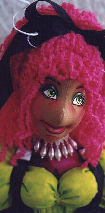

Please  email
me with your inquiries, comments or questions.
email
me with your inquiries, comments or questions.
Perhaps you'd like to see Peony's sister doll "Hydrangea" or her cousin "Bluebell"?
Different selections in materials and colors allow you to customize these dolls to any whim. The information
on this pattern can be found on the "Hydrangea" page, or you
can email me directly for more information.

"Peony" and "Little Fuschia" can also be ordered as finished dolls, in your choice of colors, individually, or as a set. Contact me for prices, color availability and length of order time.
If you would like be a part of the online class that teaches you how to make "Hydrangea" (who masquerades as
"Peony"), then just click to Doll Street University
Sign-up to join us. (Scroll down to see it)
Please  email
me with your inquiries, comments or questions.
email
me with your inquiries, comments or questions.